Reconocer en depuración el patrón:
DLL cargada 🠮 LoadLibraryW(L"user32.dll").HMODULE devuelto por LoadLibraryW.API solicitada 🠮 GetProcAddress(hModule, "MessageBoxW").API retornada por GetProcAddress.CALL indirecto a la API resuelta.El propósito es aprender a identificar el patrón de resolución dinámica de APIs:
DLL mediante LoadLibraryW.HMODULE correspondiente al módulo cargado.API concreta mediante GetProcAddress.API en tiempo de ejecución.API mediante una llamada indirecta con CALL.La muestra principal ejecuta este patrón benigno:
HMODULE h = LoadLibraryW(L"user32.dll");
FARPROC p = GetProcAddress(h, "MessageBoxW");
y después llama a la dirección obtenida mediante un puntero de función.
user32.dll es una DLL. MessageBoxW es una API/función exportada por user32.dll. Primero se carga la DLL user32.dll. Después se busca dentro de ese módulo la dirección de MessageBoxW.
Estas dos líneas de código implementan el patrón básico de carga de una DLL y resolución dinámica de una API:
HMODULE h = LoadLibraryW(L"user32.dll"); :
user32.dll en el proceso actual (o reutiliza el módulo si ya estaba cargado) y guarda el identificador del módulo en h.HMODULE es un tipo de Windows que representa un módulo cargado. En la práctica, su valor está asociado a la dirección base de la DLL en memoria.L de: L"user32.dll" 🠮 Indica una cadena Unicode de caracteres anchos. Por eso encaja con LoadLibraryW: La W significa que la función espera una cadena UTF-16.FARPROC p = GetProcAddress(h, "MessageBoxW");:
FARPROC es un tipo genérico de Windows utilizado para representar una dirección de función obtenida mediante GetProcAddress.h, busca la función exportada llamada MessageBoxW y devuelve su dirección en memoria”.p ya no representa la DLL completa. Representa la dirección concreta donde está MessageBoxW.La diferencia entre h y p es fundamental:
h
│
└── identifica el módulo
user32.dll
p
│
└── apunta a una función concreta
MessageBoxW
El flujo completo es:
1. Obtener la DLL
HMODULE h =
LoadLibraryW(L"user32.dll");
↓
h → user32.dll
2. Buscar una API dentro de esa DLL
FARPROC p =
GetProcAddress(h, "MessageBoxW");
↓
p → dirección de MessageBoxW
3. Convertir el puntero
PFN_MessageBoxW fn =
(PFN_MessageBoxW)p;
4. Ejecutar
fn(...);
↓
MessageBoxW(...)
En términos de x64dbg lo que vamos a analizar es:
LoadLibraryW
RCX → L"user32.dll"
RAX ← HMODULE
↓
GetProcAddress
RCX → HMODULE
RDX → "MessageBoxW"
RAX ← dirección de MessageBoxW
↓
call rax
Y ese último call rax es especialmente importante ya que demuestra que el programa llama a una dirección obtenida en tiempo de ejecución, en lugar de hacer una llamada convencional a una importación estática.
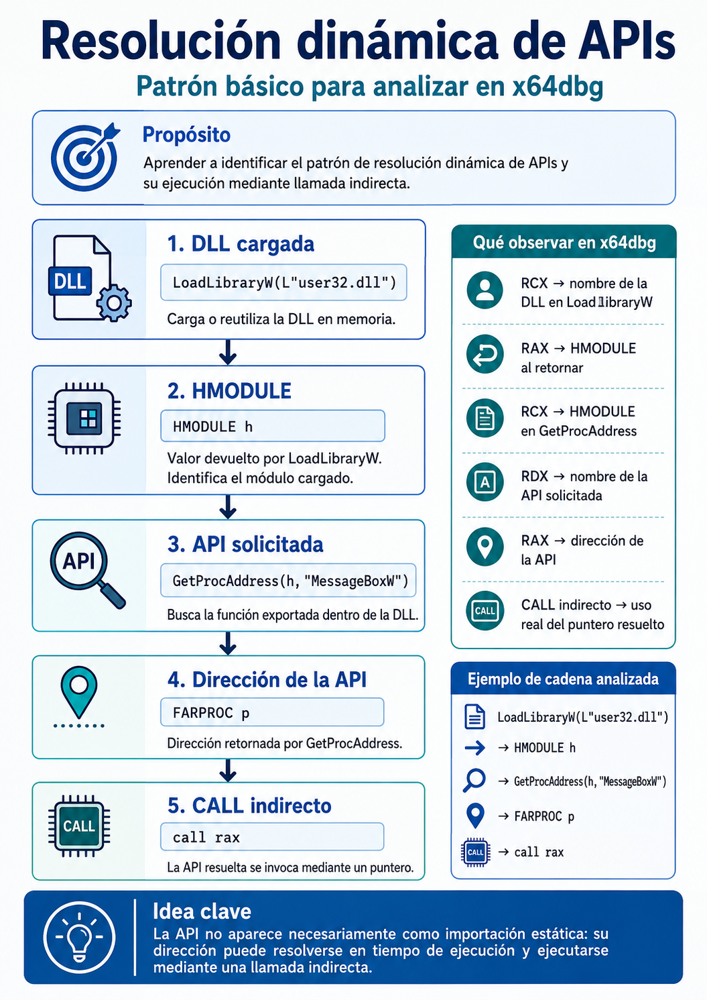
El proyecto no incluye:
Está diseñado exclusivamente como muestra de laboratorio local.
MSYS2 UCRT64.pacman -S mingw-w64-ucrt-x86_64-gcc.pacman -S mingw-w64-ucrt-x86_64-toolchain.MSYS2 UCRT64, vamos a la carpeta del proyecto.gcc -Wall -Wextra -Wno-cast-function-type -O0 -g -municode \
dynamic_api_lab.c -o dynamic_api_lab.exe
./dynamic_api_lab.exe. Veremos algo parecido a:======================================================
x64dbg Educational Lab - Dynamic API Loading
Benign demo: LoadLibraryW + GetProcAddress
======================================================
[INFO] Guided mode enabled.
[INFO] Suggested x64dbg breakpoints:
bp kernel32.LoadLibraryW
bp kernel32.GetProcAddress
MessageBoxW resuelta dinámicamente.En la barra de comandos de x64dbg ejecutamos:
bp kernel32.LoadLibraryW
bp kernel32.GetProcAddress
Opcional:
bp kernel32.FreeLibrary
Después pulsamos F9.
En sistemas modernos algunas APIs pueden aparecer encaminadas mediante
KernelBase. Si el breakpoint simbólico no se activa, localizaremos la exportación desde la vistaSymbols/Modulesy colocamos allí el breakpoint.
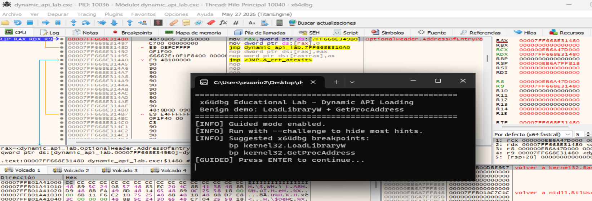
Pulsamos en la terminal Enter para continuar.
El programa se detiene en LoadLibraryW:
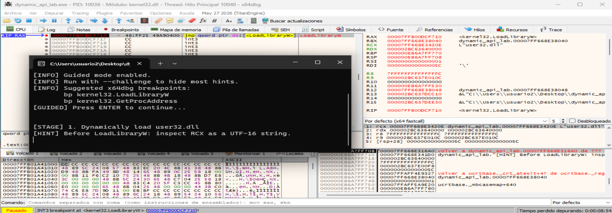
LoadLibraryW es una API de Windows que carga un módulo especificado en el espacio de direcciones del proceso actual y devuelve un identificador del módulo cargado. El módulo especificado puede hacer que se carguen otros módulos.
LoadLibraryHMODULE LoadLibraryW(
[in] LPCWSTR lpLibFileName
);
donde LoadLibraryW:
lpLibFileName. Este parámetro es el nombre del módulo. Puede ser:
.dll..exe.HMODULE. Este valor devuelto:
NULL. Para obtener información del error obtenido se llamaría a GetLastError.[in] → Es una anotación de la documentación de Microsoft. Significa que el parámetro es de entrada: el programa proporciona ese dato a la función.LPCWSTR → Es el tipo del parámetro de entrada.LPCWSTR lpLibFileName significa: lpLibFileName es un puntero a una cadena UTF-16 que contiene el nombre o la ruta de la biblioteca que se quiere cargar. Especifica un puntero a una cadena Unicode de sólo lectura.LoadLibraryW recibe el nombre Unicode de una DLL y devuelve un HMODULE que identifica el módulo cargado.
HMODULE h = LoadLibraryW(L"user32.dll");
Aquí Windows busca user32.dll, la carga y devuelve un HMODULE.
Windows suele ofrecer dos versiones de muchas APIs:
LoadLibraryA → cadenas ANSI
LoadLibraryW → cadenas Unicode UTF-16
Por eso:
LoadLibraryW(L"user32.dll");
usa una cadena de caracteres anchos:
u s e r 3 2 . d l l
almacenada en memoria como UTF-16.
Conceptualmente, cuando ejecutamos:
LoadLibraryW(L"user32.dll");
el flujo es:
programa
│
▼
LoadLibraryW("user32.dll")
│
├─ localiza la DLL
│
├─ comprueba si ya está cargada
│
├─ mapea la DLL en memoria si hace falta
│
├─ procesa sus dependencias
│
├─ realiza las tareas del loader
│
▼
HMODULE
Ese HMODULE representa esencialmente el módulo cargado y puede utilizarse después con otras APIs.
Por ejemplo:
HMODULE h = LoadLibraryW(L"user32.dll");
FARPROC p = GetProcAddress(
h,
"MessageBoxW"
);
La combinación:
LoadLibrary
+
GetProcAddress
es precisamente uno de los patrones clásicos de resolución dinámica de APIs.
Si funciona:
HMODULE hModule
contendrá un valor válido, por ejemplo conceptualmente:
00007FFC12340000
En Windows, ese valor normalmente corresponde a la dirección base del módulo cargado.
Si falla:
hModule == NULL
y podemos obtener información sobre el error con:
GetLastError();
Ejemplo:
HMODULE h = LoadLibraryW(L"user32.dll");
if (h == NULL) {
printf("Error: %lu\n", GetLastError());
}
Como estamos trabajando con un ejecutable de 64 bits, Windows utiliza la convención de llamadas x64. Los primeros argumentos van en:
1º argumento → RCX
2º argumento → RDX
3º argumento → R8
4º argumento → R9
LoadLibraryW solamente tiene un argumento:
LoadLibraryW(lpLibFileName);
Por tanto, justo antes de entrar en LoadLibraryW:
RCX → puntero al nombre de la DLL
En nuestro laboratorio:
RCX
│
▼
memoria
│
▼
"user32.dll"
También sabemos que:
ANTES de ejecutarse la función:
RCX ───────► L"user32.dll"
LoadLibraryW
│
▼
--------------------------------------------------------------------
DESPUÉS de ejecutarse la función:
RAX ───────► HMODULE de user32.dll
RVA (Relative Virtual Address) de RCXLa RVA (Relative Virtual Address) es la dirección relativa respecto a la base donde se ha cargado el ejecutable.
En la ejecución veremos:
RCX = 00007FF6D372420E
y el módulo dynamic_api_lab.exe está cargado aproximadamente en:
ImageBase = 00007FF6D3720000
Por tanto:
RVA = VA - ImageBase
Aplicándolo:
00007FF6D372420E
-
00007FF6D3720000
----------------
000000000000420E
Así que la dirección relativa estable es:
dynamic_api_lab.exe + 0x420E
o simplemente:
RVA = 0x420E
Eso significa que, aunque ASLR cambie la dirección base en cada ejecución de dynamic_api_lab.exe en x64dbg, mientras el binario no cambie, la cadena L"user32.dll" seguirá estando en:
Base actual del módulo + 0x420E
Debido a ASLR, la dirección virtual absoluta de la cadena L"user32.dll" puede variar entre ejecuciones. Sin embargo, su posición relativa dentro del módulo permanece constante mientras el binario no sea modificado. En la ejecución analizada, la cadena se encuentra en 0x00007FF6D372420E y el ejecutable está cargado en 0x00007FF6D3720000, por lo que su RVA es 0x420E. En consecuencia, puede referenciarse de forma independiente de ASLR como dynamic_api_lab.exe+0x420E.
Como hemos visto antes, para LoadLibraryW su primer (y único) argumento está en RCX.
RCX: 00007FF6D372420E.UTF-16.user32.dll: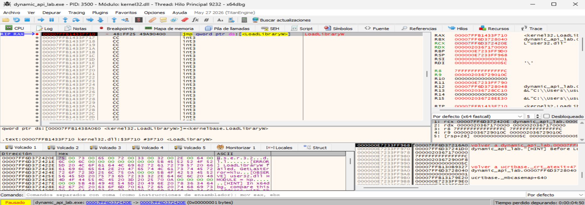
donde:75 00 73 00 65 00 72 00 33 00 32 00 2E 00 64 00 ...
u s e r 3 2 . d l l
user32.dll
W de LoadLibraryW explica los 00 que vemos entre las letras: la cadena está almacenada como UTF-16LE.00 00
UTF-16.RAX todavía no es el HMODULE. En esta captura RAX apunta a kernel32.LoadLibraryW, porque aún no se ha ejecutado la función.LoadLibraryW no se está resolviendo dinámicamente. La usamos para resolver/cargar lo necesario para luego obtener MessageBoxW.
En la llamada a LoadLibraryW, RCX apunta al nombre de la biblioteca que el programa quiere cargar dinámicamente, en este caso user32.dll. La resolución dinámica de una API concreta ocurre después, con:
GetProcAddress(hModule, "MessageBoxW");
Así que en GetProcAddress sí podremos decir: RDX apunta al nombre de la API que se está resolviendo dinámicamente, en este caso MessageBoxW.
La secuencia es:
LoadLibraryW
RCX → "user32.dll"
↓
HMODULE
↓
GetProcAddress
RCX → HMODULE
RDX → "MessageBoxW"
↓
RAX → dirección de MessageBoxW
Para que se realizara una carga dinámica de LoadLibrary, tendríamos que tener algo como:
GetProcAddress(hKernel32, "LoadLibraryW");
entonces sí veríamos:
RDX → "LoadLibraryW"
y podríamos afirmar que LoadLibraryW está siendo resuelta dinámicamente.
LoadLibraryWPulsamos una vez F8. Terminamos dentro de kernelbase.LoadLibraryW::
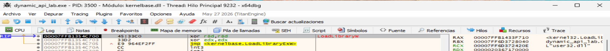
Ejecutamos hasta que regrese al programa principal: Dentro de KernelBase.LoadLibraryW, usamos Execute till return:
Ctrl + F9
Teminamos dentro de gdi32full.dll, es decir, dentro de código interno de Windows que se está ejecutando como consecuencia de la carga de user32.dll:
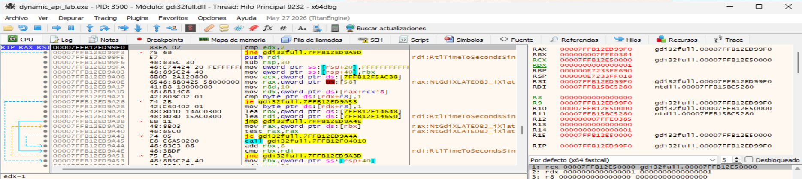
Para volver a dynamic_api_lab.exe, usamos Run until user code:
Alt + F9
LLegamos a dynamic_api_lab.exe:
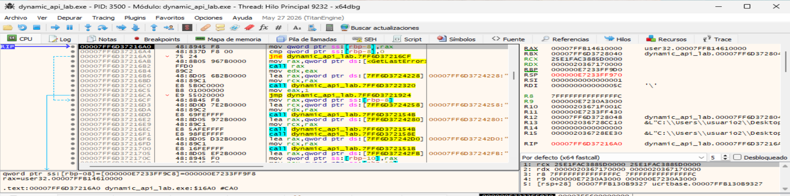
donde:RAX: 00007FFB14610000.LoadLibraryW(L"user32.dll") ha devuelto correctamente un HMODULE cuyo valor es 0x00007FFB14610000.Recordamos que:
RCX
│
▼
L"user32.dll"
│
▼
LoadLibraryW
│
▼
RAX = HMODULE
│
├──────────────┐
▼ ▼
RCX RDX -> "MessageBoxW"
│ │
└──────┬───────┘
▼
GetProcAddress
│
▼
RAX = dirección de MessageBoxW
La instrucción actual es muy interesante::
mov qword ptr ss:[rbp-8], rax
El programa está haciendo conceptualmente:
HMODULE user32 = LoadLibraryW(L"user32.dll");
Es decir:
LoadLibraryW(...)
│
▼
RAX = 00007FFB14610000
│
▼
mov [rbp-8], rax
│
▼
variable local "user32"
La siguiente instrucción:
cmp qword ptr ss:[rbp-8], 0
comprueba precisamente si LoadLibraryW falló:
if (!user32) {
...
}
Como el valor es distinto de cero, la carga ha funcionado.
Detalle de mapa de memoria:
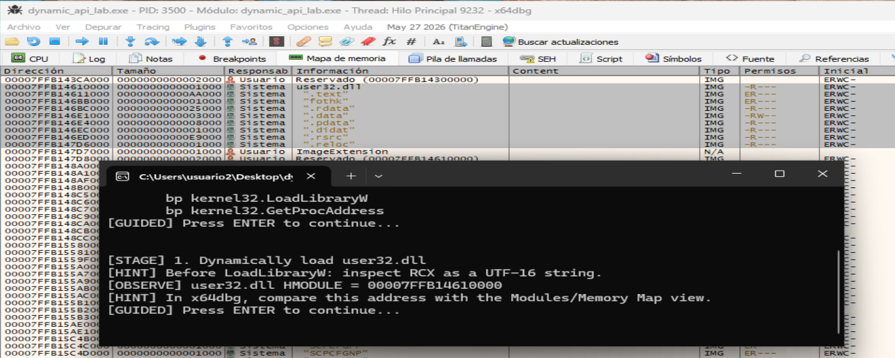
GetProcAddressLa llamada conceptual es:
GetProcAddress(user32, "MessageBoxW");
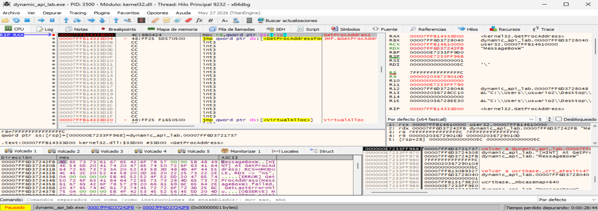
donde:RCX: handle/base del módulo 🠮 🠮 00007FFB14610000 user32.00007FFB14610000.RDX: puntero a una cadena ANSI 🠮 🠮 00007FF6D37242FB "MessageBoxW".Esto corresponde exactamente a:
GetProcAddress(
user32,
"MessageBoxW"
);
Por tanto:
RCX → HMODULE de user32.dll
RDX → nombre de la API que se resulve dinámicamente: "MessageBoxW"
Comprobamos que RCX tiene el mismo valor que devolvió antes LoadLibraryW:
LoadLibraryW devuelve:
RAX = 00007FFB14610000
GetProcAddress recibe:
RCX = 00007FFB14610000
Eso reconstruye perfectamente el flujo:
LoadLibraryW(L"user32.dll")
│
▼
RAX = 00007FFB14610000
│
▼
HMODULE user32
│
└──────────────┐
│
GetProcAddress( │
RCX = 00007FFB14610000, │
RDX = "MessageBoxW" │
)
Comprobamos el DUMP:
4D 65 73 73 61 67 65 42 6F 78 57 00
M e s s a g e B o x W
Ahora:
"MessageBoxW" → ANSI/ASCII
MessageBoxWEjecutamos GetProcAddress para observar su valor de retorno: Pulsamos
CTRL + F9
F8
Ahora estamos exactamente después del retorno de GetProcAddress. Hemos regresado al proceso dynamic-api-lab.exe y ya tenemos la evidencia clave de la resolución dinámica:
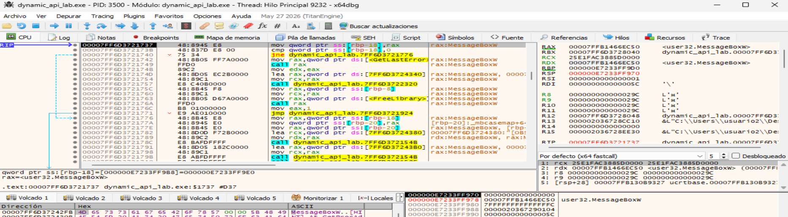
donde:RAX = 00007FFB1466EC50 <user32.MessageBoxW>.Esto significa que:
GetProcAddress(user32, "MessageBoxW");
ha devuelto correctamente la dirección de MessageBoxW.
El flujo que ya hemos demostrado es:
LoadLibraryW(L"user32.dll")
│
▼
RAX = 00007FFB14610000
HMODULE user32.dll
│
▼
GetProcAddress(
RCX = 00007FFB14610000,
RDX = "MessageBoxW"
)
│
▼
RAX = 00007FFB1466EC50
user32.MessageBoxW
La instrucción actual es:
mov qword ptr ss:[rbp-18], rax
Eso significa que el programa está guardando la dirección obtenida en una variable local:
RAX = 00007FFB1466EC50
│
▼
[RBP-18]
Conceptualmente corresponde a:
FARPROC raw_message_box =
GetProcAddress(user32, "MessageBoxW");
Ahora queremos demostrar que esa dirección no sólo se resuelve, sino que se utiliza realmente para llamar a MessageBoxW. Pulsamos F8 tres veces. Llegamos a:
jne ...
Ese cmp corresponde al código:
if (!raw_message_box) {
...
}
Como 00007FFB1466EC50 != 0, continua por la rama válida:
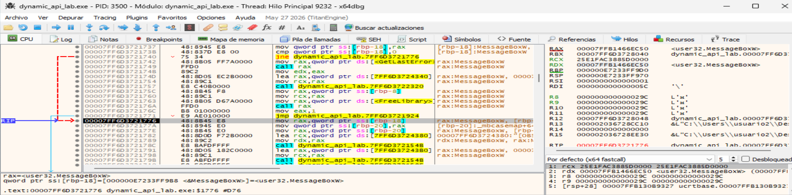
donde:[RBP-18] = 0x00007FFB1466EC50 ≠ 0 contiene la dirección que devolvió anteriormente GetProcAddress.[rbp-18] → Contiene un puntero a MessageBoxW: Contiene la dirección de user32.MessageBoxW.Ahora localizamos una instrucción de llamada cuyo destino proceda del puntero almacenado en [rbp-20]:
00007FF6D372177A mov qword ptr [rbp-20],rax
donde:
pMessageBoxW.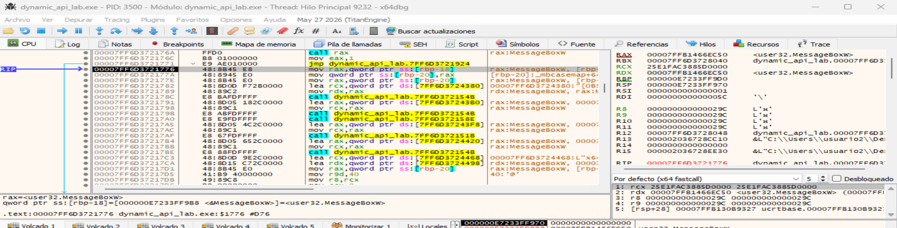
Para saber cual es el CALL correcto: La característica importante no es el registro concreto, sino que el destino del CALL procede de la dirección retornada previamente por GetProcAddress.
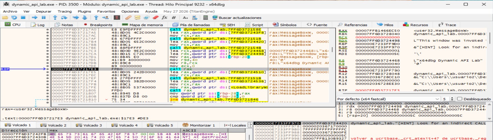
donde:MessageBoxW ha sido resuelta dinámicamente y va a ejecutarse mediante una llamada indirecta.CALL, x64dbg muestra:
RAX = 00007FFB1466EC50 <user32.MessageBoxW>.RCX = 0000000000000000.RDX = 00007FF6D3724498 L"This window was invoked...".R8 = 00007FF6D3724468 L"x64dbg Dynamic API Lab".R9 = 0000000000000040.Esto corresponde exactamente a:
pMessageBoxW(
NULL,
L"This window was invoked through a dynamically resolved API.",
L"x64dbg Dynamic API Lab",
MB_OK | MB_ICONINFORMATION
);
call raxEsta es la pieza clave de todo el laboratorio:
call rax
No vemos:
call user32.MessageBoxW
ni algo como:
call qword ptr [__imp_MessageBoxW]
El destino de la llamada está contenido en un registro:
RAX
│
▼
00007FFB1466EC50
│
▼
user32.MessageBoxW
Por tanto:
call rax
│
▼
user32.MessageBoxW
Esto es una llamada indirecta.
Y la dirección que ahora está en RAX es precisamente la que obtuvimos anteriormente mediante:
GetProcAddress(
hUser32,
"MessageBoxW"
);
int MessageBoxW(
HWND hWnd,
LPCWSTR lpText,
LPCWSTR lpCaption,
UINT uType
);
La captura demuestra:
RCX = 0
│
└── hWnd = NULL
RDX ──► L"This window was invoked..."
│
└── lpText
R8 ───► L"x64dbg Dynamic API Lab"
│
└── lpCaption
R9 = 0x40
│
└── uType
0x40 corresponde a:
MB_ICONINFORMATION
y MB_OK vale 0, por lo que:
MB_OK | MB_ICONINFORMATION
0x00 | 0x40 = 0x40
Eso explica perfectamente:
R9 = 0000000000000040
1. LoadLibraryW
RCX ─────────► L"user32.dll"
LoadLibraryW
│
▼
RAX = 00007FFB14610000
HMODULE user32.dll
2. GetProcAddress
RCX = 00007FFB14610000
HMODULE user32.dll
RDX ─────────► "MessageBoxW"
GetProcAddress
│
▼
RAX = 00007FFB1466EC50
user32.MessageBoxW
3. Almacenar el puntero
mov [rbp-18], rax
...
mov rax,[rbp-20]
4. Preparar los argumentos
RCX = NULL
RDX ─► texto
R8 ─► título
R9 = 0x40
5. Ejecutar la API
RAX ─► user32.MessageBoxW
call rax
│
▼
MessageBoxW(...)
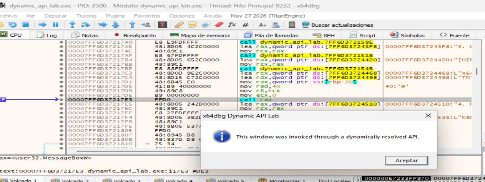
Tras resolver MessageBoxW mediante GetProcAddress, el ejecutable almacena la dirección obtenida y posteriormente la recupera para realizar una llamada indirecta. Justo antes de la instrucción call rax, el registro RAX contiene la dirección 0x00007FFB1466EC50, identificada por x64dbg como user32.MessageBoxW. Los registros RCX, RDX, R8 y R9 contienen respectivamente los cuatro argumentos de MessageBoxW. Esto confirma que la API no es invocada mediante una importación estática convencional, sino mediante una dirección resuelta dinámicamente en tiempo de ejecución.